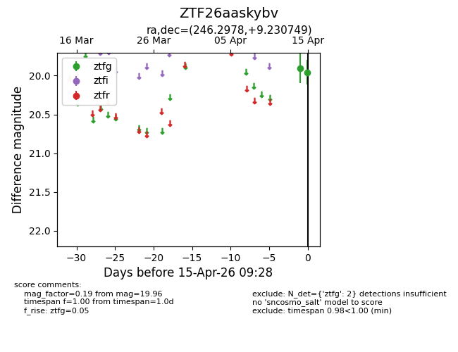
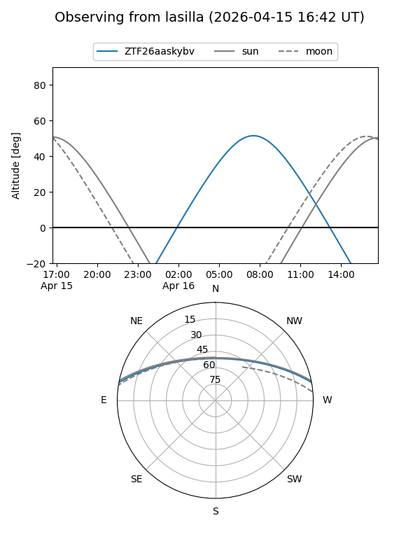
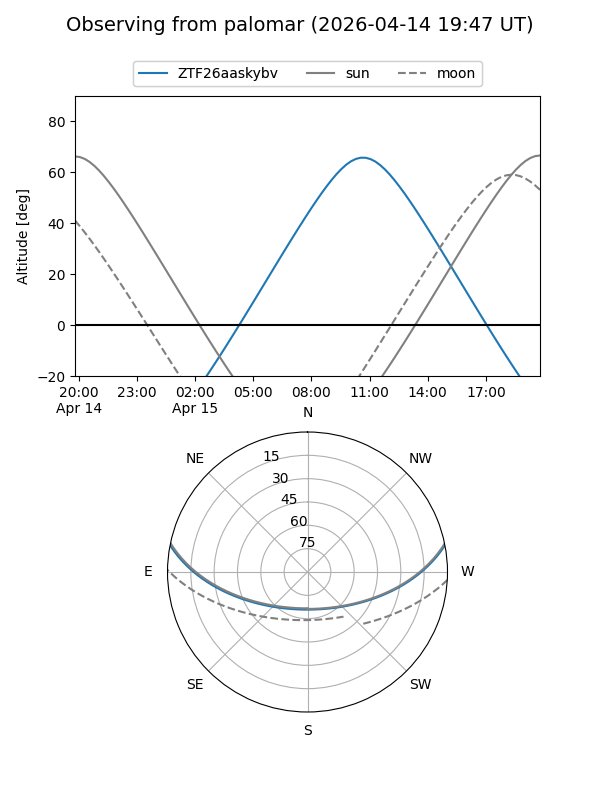
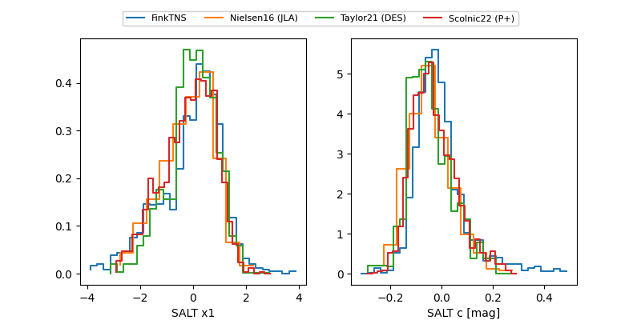

ZTF26aaskybv
Target ZTF26aaskybv at 2026-04-15 09:41
Aliases and brokers:
FINK: link
Lasair: link
ALeRCE: link
alt names
ZTF26aaskybv (ztf,fink_ztf)
Coordinates:
equatorial (ra, dec) = 246.2978,+9.23075
equatorial (HMS+DMS) = 16:25:11.48,+09:13:50.70
galactic (l, b) = (23.9479,+36.61494)
Flags:
Photometry:
last ztfg=19.96
2 ztfg detections
Lightcurve

Visibility


Additional plots
